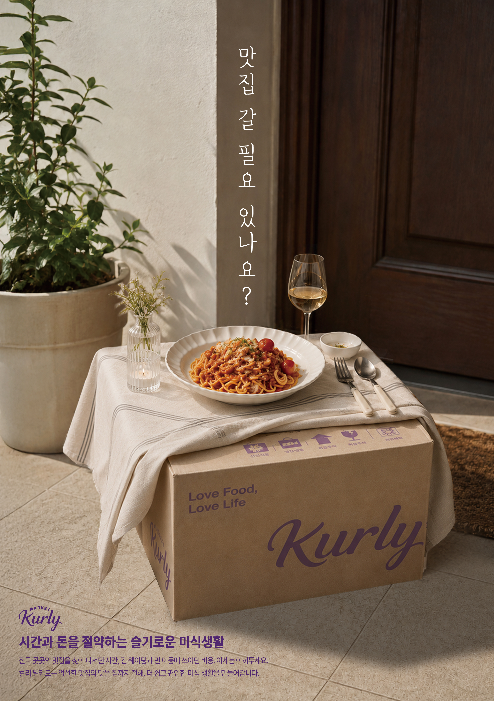

overview
마켓컬리의 ‘맛집을 집으로’라는 미식 경험을 주제로, 문 앞에 배송된 컬리 박스를 하나의 식탁처럼 연출하였다. 레스토랑의 한 끼가 집 앞까 지 찾아온 듯한 장면을 통해, 먼 지역의 맛집을 직접 찾아가거나 긴 시간 줄을 서지 않아도 컬리 밀키트로 다양한 맛을 일상에서 간편하게 경 험할 수 있다는 점을 표현하였다. 메인 카피 “맛집 갈 필요 있나요?”와 함께 이동과 기다림에 드는 시간과 비용은 줄이고, 미식의 즐거움은 가 까이 가져오는 컬리만의 편리한 미식 생활을 전달하고자 하였다.

overview
마켓컬리의 ‘맛집을 집으로’라는 미식 경험을 주제로, 문 앞에 배송된 컬리 박스를 하나의 식탁처럼 연출하고 제주 흑돼지 구이를 메인 음식으 로 담아냈다. 제주까지 직접 찾아가지 않아도 지역의 대표적인 맛을 집 앞에서 즐길 수 있다는 점을 보여주며, 컬리 밀키트를 통해 거리와 시 간의 제약 없이 제주 미식을 일상에서 간편하게 경험할 수 있음을 표현하였다. 특히 메인 카피 “맛집 갈 필요 이수꽈?”에 제주 방언을 활용해 지역의 정체성을 더하고, 멀리 떠나지 않아도 제주 맛집의 한 끼를 가까이에서 만날 수 있는 컬리만의 편리한 미식 생활을 전달하고자 하였다.